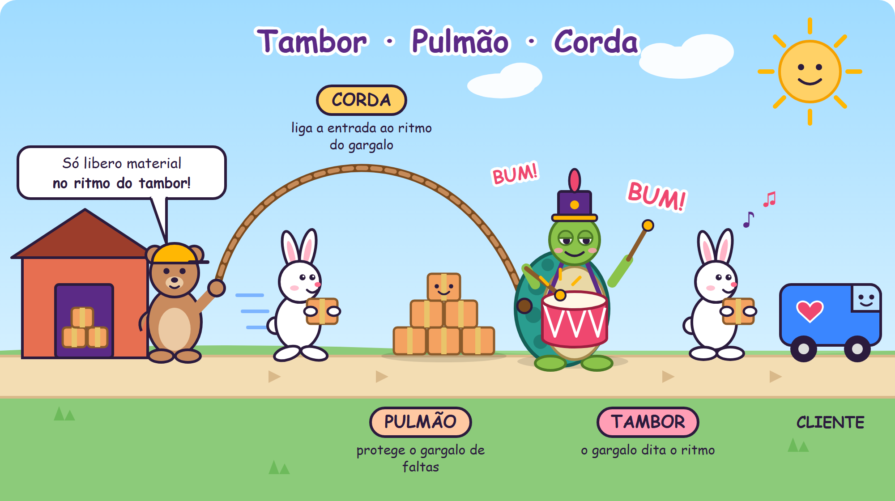
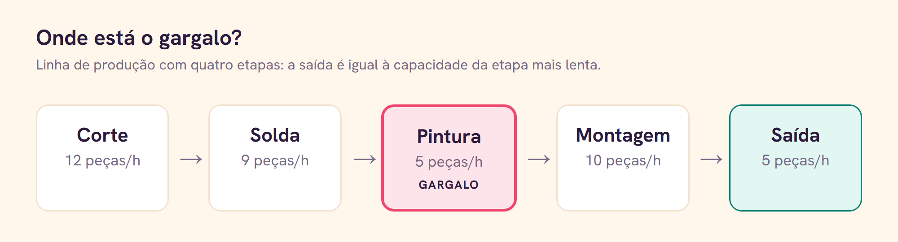
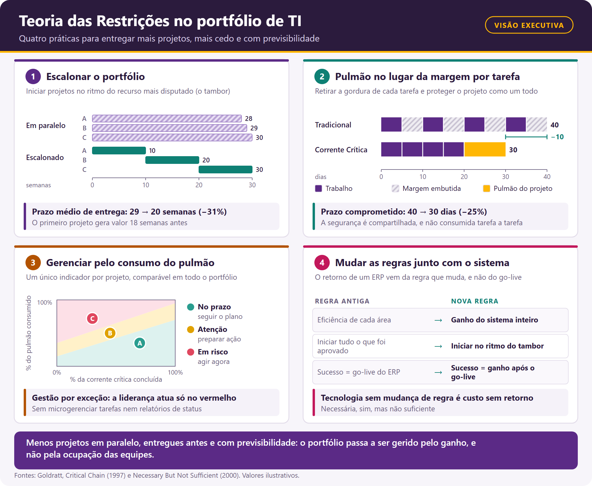

00-Capa.png (1920×1080).Ctrl+V. Títulos, negrito, itálico, listas, citações e links são mantidos.
02-TamborPulmaoCorda.png · seção “Produção puxada e empurrada”
03-Gargalo.png · seção “Por que os gargalos importam”
04-PortfolioTOC.png · seção “TOC aplicada na TI”Como Eliyahu Goldratt mostrou que o desempenho de qualquer sistema é definido pelo seu elo mais fraco, e por que essa ideia ganha nova força na era da inteligência artificial.
A Teoria das Restrições (TOC, do inglês Theory of Constraints) parte de uma premissa simples: todo sistema existe para atingir uma meta, e em todo sistema há pelo menos uma restrição que limita o quanto ele consegue avançar em direção a ela. Assim como a resistência de uma corrente é determinada pelo seu elo mais fraco, a capacidade de uma empresa é determinada pela sua restrição. [3]
A restrição pode ser física (uma máquina, uma equipe, um fornecedor), de mercado (falta de demanda) ou, com muita frequência, de política: regras, métricas e hábitos que um dia fizeram sentido e continuam sendo seguidos mesmo depois de terem perdido a razão de existir.
Para lidar com ela, Goldratt propôs os cinco passos de focalização:
A TOC também propõe medir o desempenho com três indicadores globais, no lugar de dezenas de métricas locais [1]:
A lógica é aumentar o ganho enquanto se reduzem, ao mesmo tempo, o inventário e a despesa operacional.
Eliyahu M. Goldratt (31 de março de 1947 — 11 de junho de 2011) foi um físico israelense que se tornou um dos pensadores de gestão mais influentes do século XX. Formado pela Universidade de Tel Aviv, com mestrado e doutorado pela Universidade Bar-Ilan, aplicou o raciocínio científico da física aos problemas das organizações. [4]
No fim dos anos 1970 desenvolveu o OPT, um software de programação da produção, e percebeu que o que realmente limitava os resultados das fábricas não era o cálculo, mas a forma de pensar dos gestores. Para ensinar essa forma de pensar, escreveu um romance de negócios: A Meta (1984), em coautoria com Jeff Cox, que vendeu milhões de exemplares no mundo todo.
Depois vieram, entre outros, Mais que sorte (1994), Corrente Crítica (1997), Necessária, sim, mas não suficiente (2000) e A Escolha (2008), que levaram a TOC da fábrica para projetos, distribuição, vendas, tecnologia e para a própria vida.
Alex Rogo é gerente de uma fábrica da UniCo que atrasa pedidos, acumula estoque e dá prejuízo. O vice-presidente da divisão lhe dá um ultimato: três meses para reverter a situação, ou a fábrica será fechada. Ao mesmo tempo, o casamento de Alex desmorona pela falta de tempo em casa. [1]
Alex reencontra Jonah, um antigo professor de física, que em vez de dar respostas faz perguntas. A primeira delas desmonta tudo: qual é a meta da empresa? A resposta, fazer dinheiro hoje e no futuro, mostra que as métricas que a fábrica perseguia, como eficiência de cada máquina e custo por peça, não tinham relação direta com essa meta.
Num acampamento com o grupo de escoteiros do filho, Alex observa que a fila de meninos se espalha por causa do mais lento, Herbie. Ali ele entende os eventos dependentes e as flutuações estatísticas: numa sequência de etapas, os atrasos se acumulam e os ganhos não se compensam. Colocando Herbie à frente da fila e aliviando sua mochila, o grupo inteiro anda junto.
De volta à fábrica, a equipe encontra seus “Herbies”, a máquina NCX-10 e o tratamento térmico, e passa a gerenciar a fábrica inteira em função deles. Os estoques caem, as entregas se normalizam, a fábrica volta a dar lucro, e Alex é promovido. A lição final é que melhorar é um processo contínuo, e que o mais valioso não é a solução em si, mas o método para chegar a ela.
Na continuação de A Meta, Alex Rogo agora é vice-presidente executivo e responde por três empresas de um grupo diversificado: uma de cosméticos, uma de caldeiras a vapor e uma gráfica. A diretoria decide vendê-las para levantar caixa, e Alex precisa torná-las mais valiosas, sabendo que a venda pode custar o emprego de muitas pessoas. [2]
Se A Meta tratava da restrição física na fábrica, Mais que sorte trata da restrição de mercado e de política. Alex e sua equipe usam os Processos de Pensamento da TOC, como a Árvore da Realidade Atual, a Nuvem de Evaporação e a Árvore da Realidade Futura, para identificar o problema-raiz de cada empresa e construir ofertas que os clientes não conseguem recusar.
As mesmas ferramentas aparecem na vida pessoal de Alex, na relação com os filhos adolescentes. O título diz o essencial: resultados que parecem sorte são, na verdade, fruto de um processo de raciocínio estruturado, que pode ser aprendido e repetido.
Rick Silver é professor de uma escola de negócios que precisa provar o seu valor para garantir o cargo, numa instituição que também luta para atrair alunos. Numa turma de executivos, ele e os alunos investigam por que quase todos os projetos atrasam, estouram o orçamento ou entregam menos do que prometeram, mesmo com estimativas cheias de margem de segurança. [8]
A resposta está no comportamento humano diante da segurança embutida em cada tarefa:
A solução é a Corrente Crítica: a sequência mais longa de tarefas dependentes, considerando não só a ordem das atividades, mas também a disputa pelos mesmos recursos. As estimativas de cada tarefa são reduzidas, a segurança individual é retirada e concentrada num pulmão do projeto, no fim, e em pulmões de convergência onde caminhos secundários se juntam à corrente crítica. O acompanhamento deixa de ser “cada tarefa no prazo” e passa a ser “quanto do pulmão já foi consumido”. É a aplicação dos cinco passos de focalização à gestão de projetos.
Escrito com Eli Schragenheim e Carol Ptak, o romance acompanha uma empresa que desenvolve sistemas ERP. Ela cresce rápido, mas os clientes começam a perceber que, depois de implantações caras e demoradas, os resultados financeiros não mudam. O mercado desacelera, e a empresa precisa descobrir por que o seu produto não entrega o valor prometido. [9]
A conclusão dá nome ao livro: a tecnologia é necessária, mas não suficiente. Um ERP torna a informação disponível muito mais rápido, mas se as empresas continuam usando as mesmas regras de antes, como contabilidade de custos, eficiência local e lotes grandes, o sistema apenas automatiza o comportamento antigo. O benefício só aparece quando as regras mudam junto com a tecnologia.
É deste livro que vem a raiz das quatro perguntas sobre tecnologia, discutidas na última seção deste artigo, e que se aplicam hoje, quase palavra por palavra, à adoção da inteligência artificial.
Último grande livro de Goldratt, escrito com a filha, Efrat Goldratt-Ashlag, A Escolha é um diálogo entre pai e filha. Ela questiona; ele explica, com casos reais de empresas, como pensa. O tema deixa de ser uma técnica de gestão e passa a ser a própria forma de pensar. [10]
Goldratt defende que pensar com clareza é uma escolha, e que ela se apoia em algumas crenças:
[IMAGEM — inserir 01-AEscolhaCrencas.png · legenda: “As cinco crenças que sustentam a escolha de pensar com clareza.”]
O livro fecha o ciclo iniciado em A Meta: a Teoria das Restrições não é só um método para fábricas ou projetos, mas um modo de pensar que pode ser escolhido, e que leva a uma vida mais plena.
A TOC propõe o seu próprio mecanismo, o Tambor-Pulmão-Corda (Drum-Buffer-Rope), que é a versão industrial do Herbie à frente da fila:
[IMAGEM — inserir 02-TamborPulmaoCorda.png · legenda: “O Tambor-Pulmão-Corda em versão cartum: a tartaruga dita o ritmo, as caixas a protegem e a corda segura a entrada.”]
Em vez de limitar o estoque em cada etapa, como no kanban, o Tambor-Pulmão-Corda protege apenas o ponto que importa. O resultado é um sistema puxado pela restrição, com menos estoque e entregas mais previsíveis.
Imagine uma linha com quatro etapas: Corte (12 peças/h) → Solda (9 peças/h) → Pintura (5 peças/h, o gargalo) → Montagem (10 peças/h).
[IMAGEM — inserir 03-Gargalo.png · legenda: “A saída da linha é igual à capacidade da etapa mais lenta: 5 peças por hora.”]
Não importa quanto o corte ou a montagem melhorem: o sistema entrega 5 peças por hora. Todo esforço aplicado fora do gargalo apenas gera mais estoque parado na frente da pintura. Goldratt resumiu isso em duas frases [1]:
Uma hora perdida no gargalo é uma hora perdida no sistema inteiro.
Uma hora economizada num recurso que não é gargalo é uma miragem.
Daí vêm consequências que contrariam a intuição gerencial:
Goldratt foi um dos críticos mais duros da forma como a lógica financeira tradicional, apoiada na contabilidade de custos, passou a comandar as decisões operacionais. Em 1983, ele a chamou de “a inimiga número um da produtividade”. [11]
A crítica não é ao dinheiro: a meta, afinal, é ganhar dinheiro. A crítica é à forma de medi-lo. A contabilidade de custos rateia as despesas fixas entre os produtos e cria um “custo unitário” que não existe na realidade, já que salários, aluguel e energia não mudam se a fábrica produzir uma peça a mais ou a menos. Quando esse número passa a guiar a operação, surgem distorções [5]:
Um exemplo simples, com a pintura como gargalo:
A alternativa proposta pela TOC é a Contabilidade de Ganhos (Throughput Accounting): o lucro líquido é o ganho menos a despesa operacional, e o retorno sobre o investimento é esse lucro dividido pelo inventário. Toda decisão passa por três perguntas: aumenta o ganho? reduz o inventário? reduz a despesa operacional? E a prioridade é sempre o ganho.
A mensagem não é abolir as finanças, mas colocá-las a serviço da meta, e não o contrário. Quando a planilha manda na operação, a empresa otimiza o relatório do trimestre e perde de vista o sistema que gera dinheiro.
A primeira pergunta de Jonah, “qual é a meta?”, é uma pergunta de dono. Um funcionário que olha apenas para a sua área tende a otimizar o próprio indicador: eficiência da máquina, horas faturadas, tarefas concluídas. Um dono olha para o sistema inteiro e pergunta se aquilo está gerando dinheiro, hoje e no futuro.
Diga-me como me medes, e eu te direi como me comportarei. [5]
A frase de Goldratt explica por que o senso de dono raramente nasce sozinho. Se as métricas premiam o ótimo local, as pessoas vão perseguir o ótimo local. Ter visão empreendedora, na lógica da TOC, significa:
Uma área de TI também é um sistema de fluxo, só que invisível. Não há pilhas de peças no chão, mas há o equivalente: histórias iniciadas e não terminadas, branches esperando revisão, código pronto que não foi implantado, chamados parados em filas. Esse é o inventário da TI, e ele se comporta exatamente como o da fábrica de Alex Rogo: esconde problemas, alonga prazos e não gera ganho até chegar ao cliente.
Não por acaso, O Projeto Fênix, um dos romances mais lidos sobre TI, é uma homenagem declarada a A Meta. Nele, a restrição é Brent, o especialista de quem todos dependem, e a virada acontece quando a empresa passa a proteger e subordinar tudo a ele, em vez de sobrecarregá-lo. [13]
Ágil e TOC compartilham a mesma base: lotes pequenos, fluxo contínuo, feedback rápido e limite ao trabalho em andamento. David J. Anderson aplicou a TOC à engenharia de software e, partindo do Tambor-Pulmão-Corda, chegou ao método Kanban para TI. [12] [14]
Pelo olhar da TOC, alguns vícios comuns em times ágeis ficam evidentes:
Os cinco passos se traduzem de forma direta: mapear o fluxo de valor e encontrar onde o trabalho espera mais tempo (identificar); proteger o tempo do gargalo e tirar dele tarefas que outros podem fazer (explorar); limitar o trabalho em andamento e fazer o time ajudar na etapa travada (subordinar); automatizar testes, integração e implantação (elevar); e medir de novo, porque o gargalo vai mudar de lugar. No lugar de velocidade e taxa de ocupação, as métricas que importam passam a ser vazão e tempo de atravessamento, do pedido até a produção.
Projetos de TI sofrem de tudo o que Corrente Crítica descreve: estimativas infladas, síndrome do estudante, lei de Parkinson e, sobretudo, multitarefa. Nas áreas de TI, as mesmas pessoas costumam estar alocadas em vários projetos ao mesmo tempo, e o efeito é contraintuitivo [8]:
Daí vêm as principais práticas da TOC para projetos e portfólios de TI:
[IMAGEM — inserir 04-PortfolioTOC.png · legenda: “As quatro práticas em uma página, com exemplos numéricos, para discussão com a liderança. Valores ilustrativos.”]
Ágil e Corrente Crítica não competem. Na prática, funcionam bem juntos: o ágil organiza o fluxo dentro do time, e a TOC organiza o fluxo entre times, projetos e o portfólio, onde a multitarefa e as restrições de política costumam custar mais caro.
Cada revolução industrial removeu uma restrição: a máquina a vapor removeu o limite da força muscular, a eletricidade e a linha de montagem removeram limites de energia e escala, e a computação removeu limites de cálculo e informação. A inteligência artificial ataca uma restrição que parecia permanente: a capacidade humana de ler, analisar, escrever, programar e decidir em grande volume.
Goldratt deixou uma regra que se aplica diretamente a esse momento [7]: uma tecnologia só traz benefício se, e somente se, reduzir uma limitação. Para isso, ele propôs quatro perguntas:
A maioria das empresas para na segunda pergunta. Instalam a IA, mas mantêm as mesmas regras, aprovações, métricas e fluxos que foram criados para um mundo onde o trabalho cognitivo era escasso. O resultado é o mesmo da fábrica de Alex Rogo: mais produção fora do gargalo, mais estoque e nenhum ganho a mais.
Na minha visão, a TOC é o que transforma a IA de ferramenta em revolução, por três razões:
A IA aumenta a capacidade; a Teoria das Restrições diz onde essa capacidade vira resultado. Juntas, elas podem fazer pelas organizações do conhecimento o que a linha de montagem fez pelas fábricas.
E na sua empresa, onde está a restrição hoje? E ela mudou de lugar depois da chegada da IA? Conte nos comentários.
Versão completa, também em inglês e italiano: giovanipm.github.io/TeoriaDasRestricoes.html
Revisado e formatado usando Anthropic Claude.